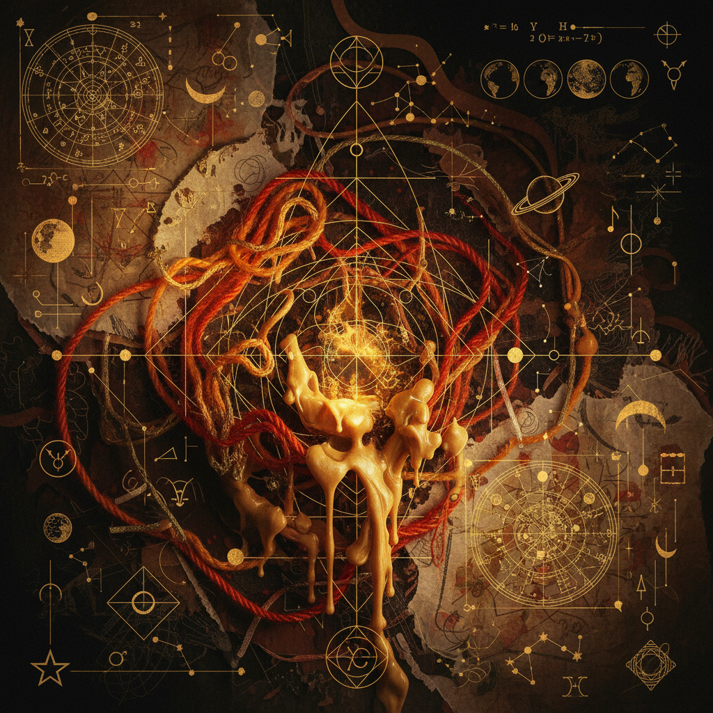
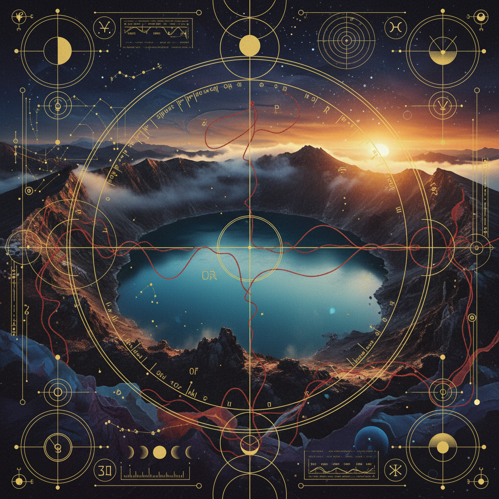

The Coagulation of Fire
A deep-immersion protocol for the Scorpio Full Moon. Transforming leaden intention into crystalline action through the crucible of focused will.
Material Requirements
- lens Pure Beeswax Candle (Crimson)
- lens Obsidian or Smoked Quartz Focal
- lens Distilled Water in Silver Vessel
- lens Saffron and Myrrh Incense
Phase I: The Incubation
Duration: 22 MinutesSit in absolute stillness. Allow the environment to fade until only the breath remains. This is the stage of *Nigredo*—the blackening. Acknowledge the shadows of the past lunar cycle without judgment.
Phase II: The Coagulation
Duration: 33 MinutesIgnite the primary flame. As the wax softens, visualize your singular intent becoming tangible. Focus on the transmutation of liquid thought into solid commitment.
"As this flame devours the wick, so does my resolve consume the hesitation of the spirit. What was fluid now becomes stone."
Phase III: The Fixation
Duration: 11 MinutesThe sealing of the pact. This is the moment of sacred commitment. Use the input field below to record the specific anchor of your transformation.
Astro-Metaphysical Alignment

Spatiotemporal Anchors

Ritual Efficiency
This protocol utilizes the maximum energetic output of the Scorpio-Taurus axis. Recommended for advanced practitioners only.
Archival Verification
This script has been cross-referenced with the 14th Century Venetian Grimoires and validated for contemporary usage.